Combine all ingredients. Bake at 350° for 45 minutes.
Dessert
No Bake Cookies
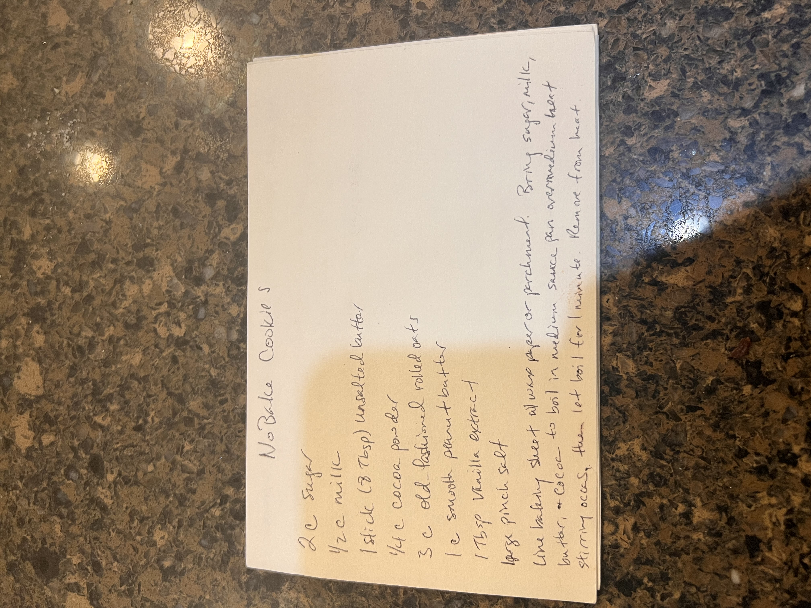
Ingredients
2 c sugar
1/2 c milk
1 stick (8 Tbsp) unsalted butter
1/4 c cocoa powder
3 c old-fashioned rolled oats
1 c smooth peanut butter
1 Tbsp vanilla extract
Large pinch salt
Instructions
Line baking sheet with wax paper or parchment. Bring sugar, milk, butter, & cocoa to boil in medium sauce pan over medium heat stirring occasionally, then let boil for 1 minute. Remove from heat.
Dessert
Peanut Butter Ball (Dip)
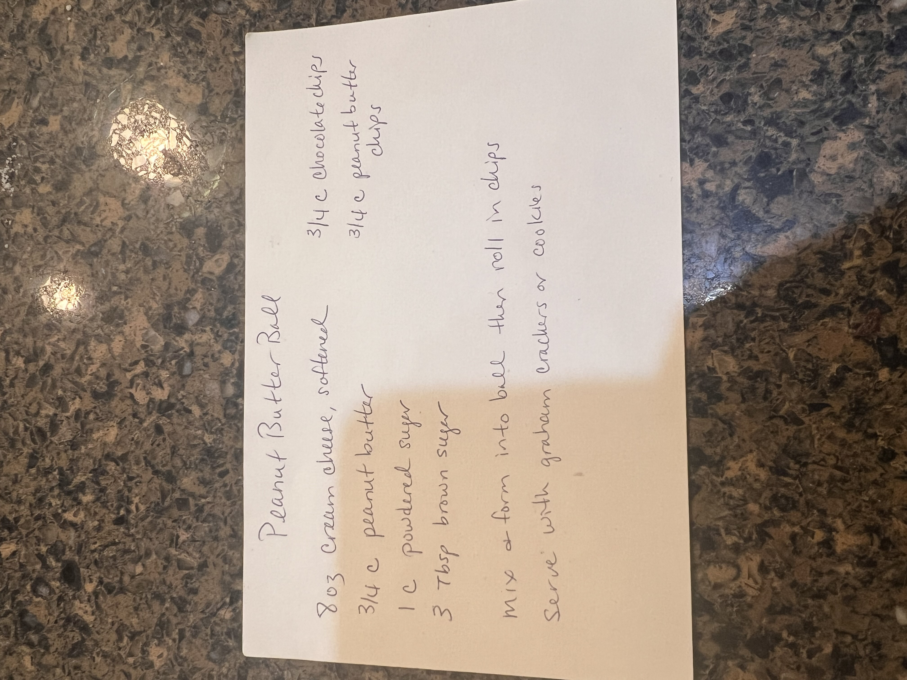
Ingredients
8 oz cream cheese, softened
3/4 c peanut butter
1 c powdered sugar
3 Tbsp brown sugar
3/4 c chocolate chips
3/4 c peanut butter chips
Instructions
Mix & form into ball then roll in chips. Serve with graham crackers or cookies.
Dessert
Peanut Butter Balls (Rice Krispies)
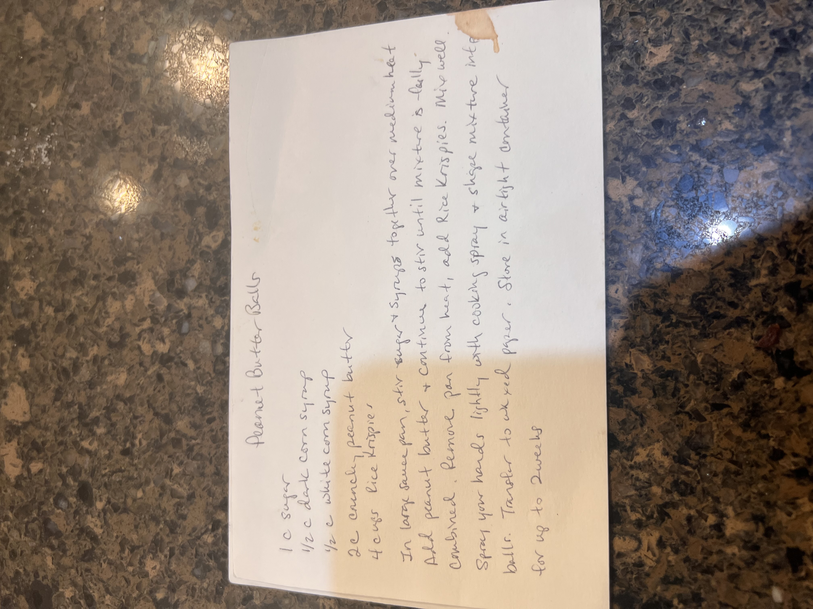
Ingredients
1 c sugar
1/2 c dark corn syrup
1/2 c white corn syrup
2 c crunchy peanut butter
4 cups Rice Krispies
Instructions
In large sauce pan, stir sugar & syrups together over medium heat. Add peanut butter & continue to stir until mixture is fully combined. Remove pan from heat, add Rice Krispies. Mix well. Spray your hands lightly with cooking spray & shape mixture into balls. Transfer to wax paper. Store in airtight container for up to 2 weeks.
Dessert
Pecan Pie
350°
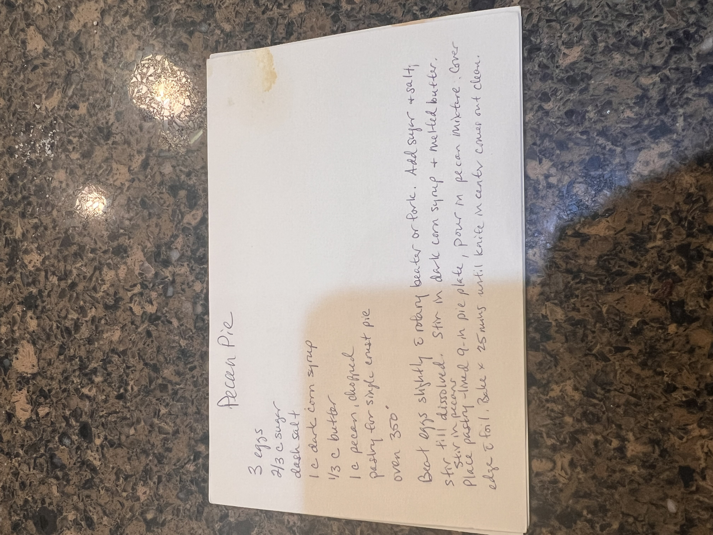
Ingredients
3 eggs
2/3 c sugar
Dash salt
1 c dark corn syrup
1/3 c butter
1 c pecan, chopped
Pastry for single crust pie
Instructions
Beat eggs slightly with rotary beater or fork. Add sugar & salt, stir till dissolved. Stir in dark corn syrup & melted butter. Stir in pecans. Place pastry-lined 9-in pie plate, pour in pecan mixture. Cover edge with foil. Bake x 25 mins until knife in center comes out clean.
Dessert
Pumpkin Pie
Yields 2 pies
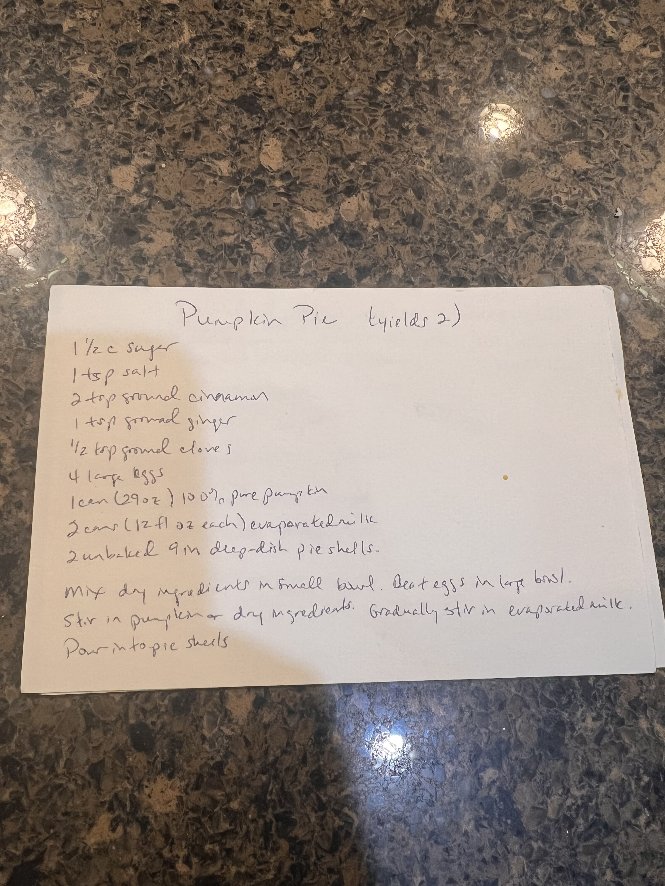
Ingredients
1 1/2 c sugar
1 tsp salt
2 tsp ground cinnamon
1 tsp ground ginger
1/2 tsp ground cloves
4 large eggs
1 can (30 oz) pure pumpkin
2 cans (12 fl oz each) evaporated milk
2 unbaked 9 in deep-dish pie shells
Instructions
Mix dry ingredients in small bowl. Beat eggs in large bowl. Stir in pumpkin, dry ingredients. Gradually stir in evaporated milk. Pour into pie shells.
Side
Corn Casserole
350° | 1 hour | Yields 9 servings
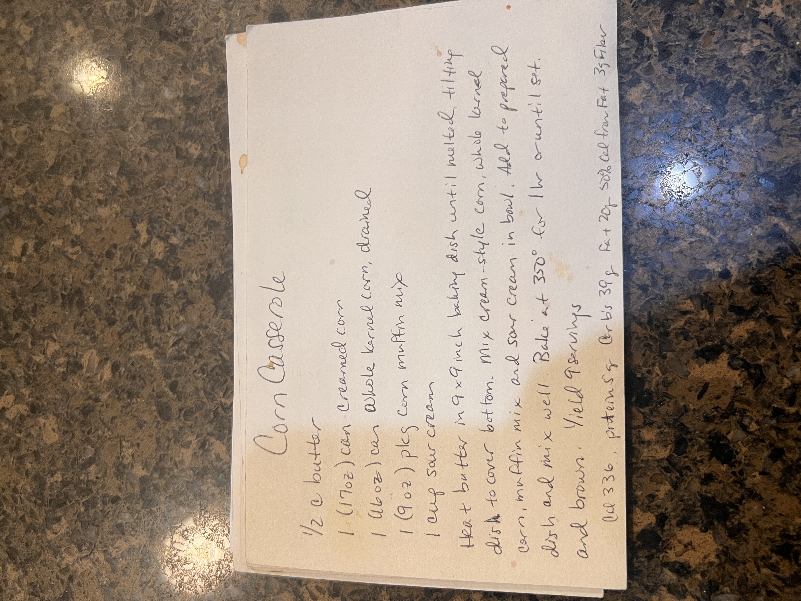
Ingredients
1/2 c butter
1 (17 oz) can creamed corn
1 (16 oz) can whole kernel corn, drained
1 (9 oz) pkg corn muffin mix
1 cup sour cream
Instructions
Heat butter in 9x9 inch baking dish until melted, tilting dish to cover bottom. Mix cream-style corn, whole kernel corn, muffin mix and sour cream in bowl. Add to prepared dish and mix well. Bake at 350° for 1 hr or until set and brown.
Salad
Cranberry Salad
Serves 8-10
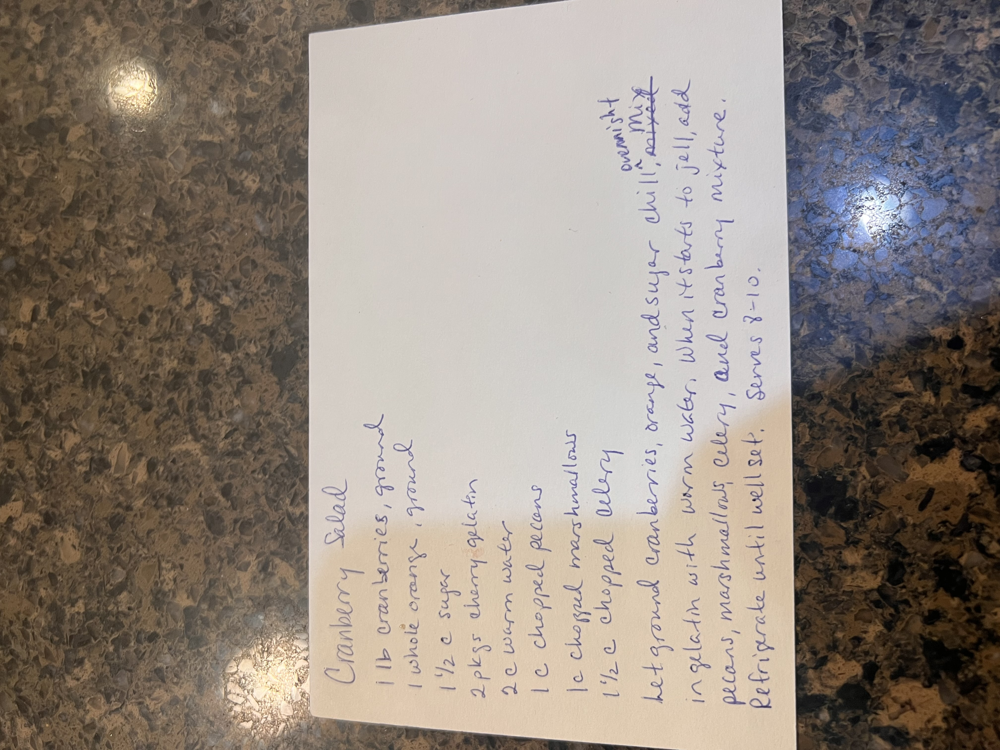
Ingredients
1 lb cranberries, ground
1 whole orange, ground
1 1/2 c sugar
2 pkgs cherry gelatin
2 c warm water
1 c chopped pecans
1 c chopped marshmallows
1 1/2 c chopped celery
Instructions
Let ground cranberries, orange, and sugar chill overnight. Mix gelatin with warm water. When it starts to jell, add pecans, marshmallows, celery, and cranberry mixture. Refrigerate until well set.
Salad
Fruit Salad with Cannoli Cream
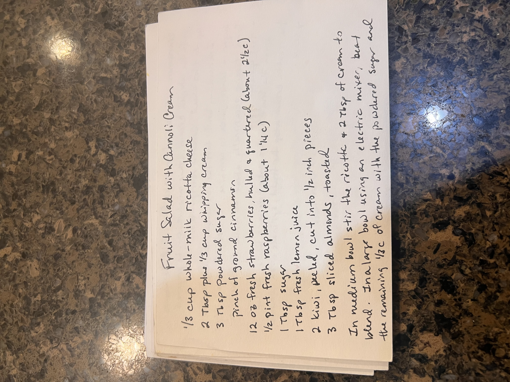
Ingredients
1/3 cup whole-milk ricotta cheese
2 Tbsp plus 1/3 cup whipping cream
3 Tbsp powdered sugar
Pinch of ground cinnamon
12 oz fresh strawberries, hulled & quartered (about 2 1/2 c)
1/2 pint fresh raspberries (about 1 1/4 c)
1 Tbsp sugar
1 Tbsp fresh lemon juice
2 kiwi, peeled, cut into 1/2 inch pieces
3 Tbsp sliced almonds, toasted
Instructions
In medium bowl stir the ricotta & 2 Tbsp of cream to blend. In a large bowl using an electric mixer, beat the remaining 1/3 c of cream with the powdered sugar and cinnamon.
Side
Garlic Mashed Potatoes
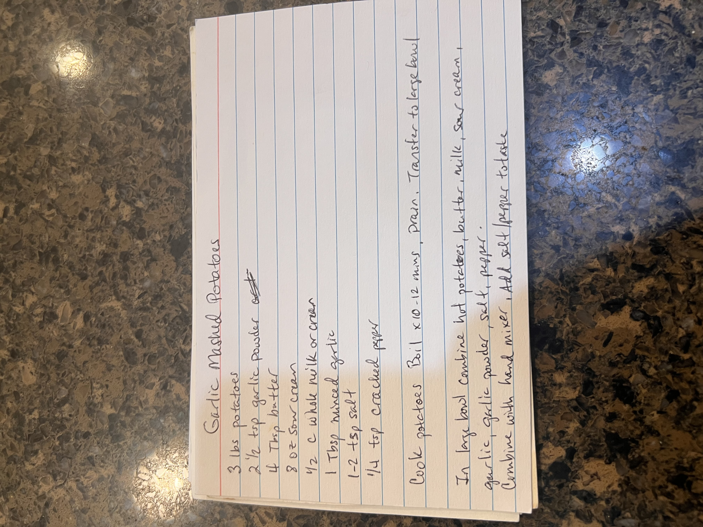
Ingredients
3 lbs potatoes
2 1/2 tsp garlic powder
4 Tbsp butter
8 oz sour cream
1/2 c whole milk or cream
1 Tbsp minced garlic
1-2 tsp salt
1/4 tsp cracked pepper
Instructions
Cook potatoes. Boil 10-12 mins, drain. Transfer to large bowl. Combine hot potatoes, butter, milk, sour cream, garlic, garlic powder, salt, pepper. Combine with hand mixer. Add salt/pepper to taste.
Side
Green Beans Amandine
Serves 6
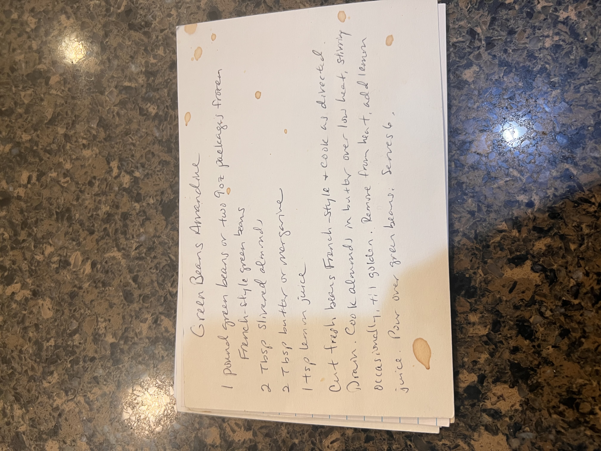
Ingredients
1 pound green beans or two 9 oz packages frozen French-style green beans
2 Tbsp slivered almonds
2 Tbsp butter or margarine
1 tsp lemon juice
Instructions
Cut fresh beans French-style & cook as directed. Drain. Cook almonds in butter over low heat, stirring occasionally, til golden. Remove from heat, add lemon juice. Pour over green beans.
Salad
Marinated Vegetable Salad
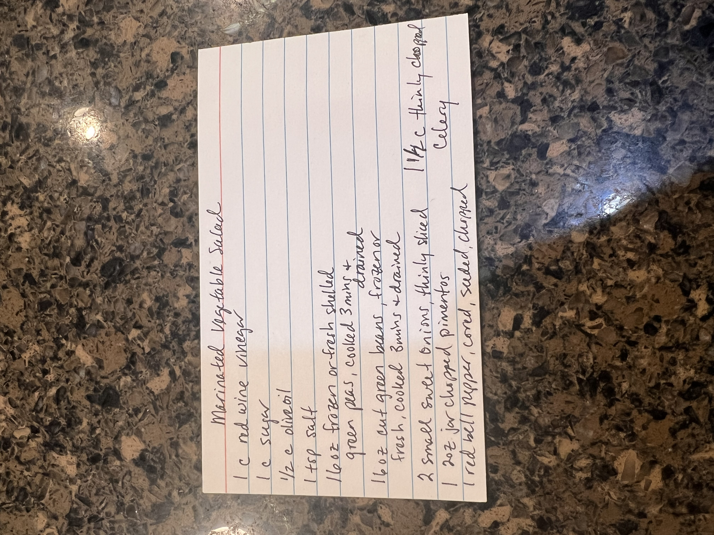
Ingredients
1 c red wine vinegar
1 c sugar
1/2 c olive oil
1 tsp salt
16 oz frozen or fresh shelled green peas, cooked 3 mins & drained
16 oz cut green beans, frozen or fresh, cooked 8 mins & drained
2 small sweet onions, thinly sliced
1 2oz jar chopped pimentos
1 red bell pepper, cored, seeded, chopped
1 1/2 c thinly chopped celery
Side
Sweet Potato Casserole
350° | 35 minutes
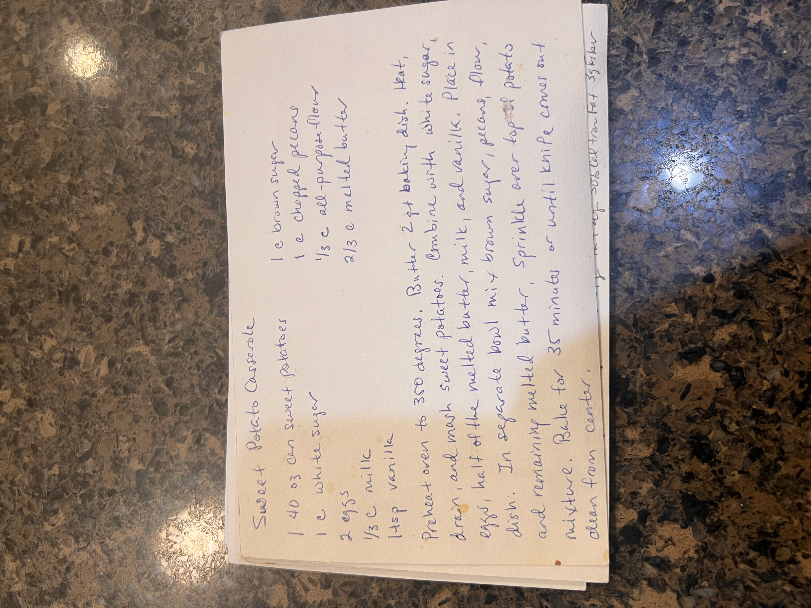
Base Ingredients
1 40 oz can sweet potatoes
1 c white sugar
2 eggs
1/3 c milk
1 tsp vanilla
Topping Ingredients
1 c brown sugar
1 c chopped pecans
1/3 c all-purpose flour
2/3 c melted butter
Instructions
Preheat oven to 350°. Butter 2 qt baking dish. Heat, drain, and mash sweet potatoes. Combine with white sugar, eggs, half of the melted butter, milk, and vanilla. Place in dish. In separate bowl mix brown sugar, pecans, flour, and remaining melted butter. Sprinkle over top of potato mixture. Bake for 35 minutes or until knife comes out clean from center.
Salad
Taffy Apple Salad
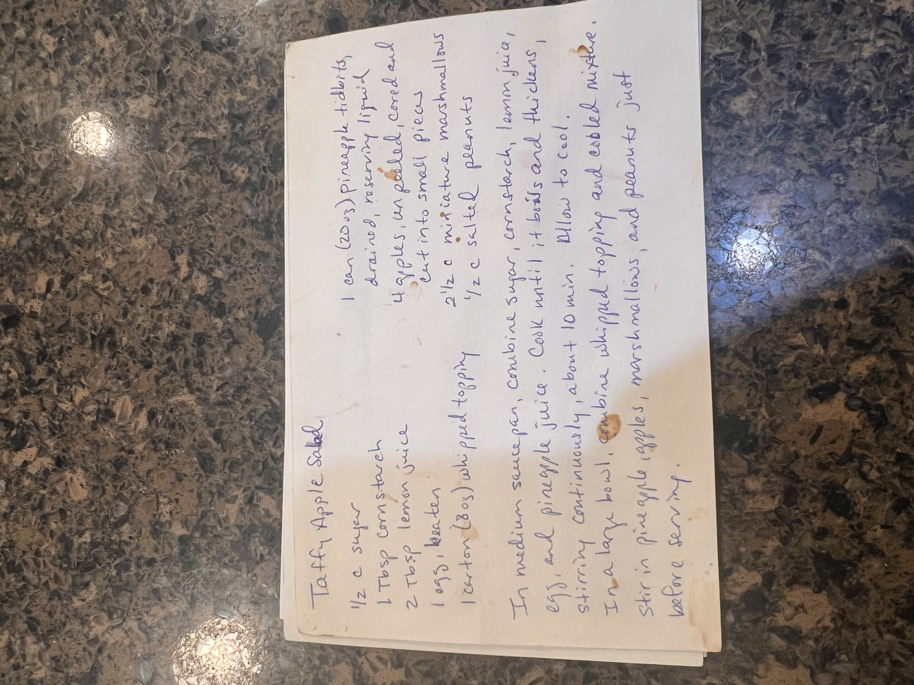
Ingredients
1/2 c sugar
1 Tbsp cornstarch
2 Tbsp lemon juice
1 egg, beaten
1 carton (8 oz) whipped topping
1 can (20 oz) pineapple tidbits, drained, reserving liquid
4 apples, unpeeled, cored and cut into small pieces
2 1/2 c miniature marshmallows
1/2 c salted peanuts
Instructions
In medium saucepan, combine sugar, cornstarch, lemon juice, egg, and pineapple juice. Cook until it boils and thickens, stirring continuously, about 10 min. Allow to cool. In a large bowl, combine whipped topping and cooled mixture. Stir in pineapple, apples, marshmallows, and peanuts just before serving.
Side
Thanksgiving Turkey Dressing
450° | 1 hour
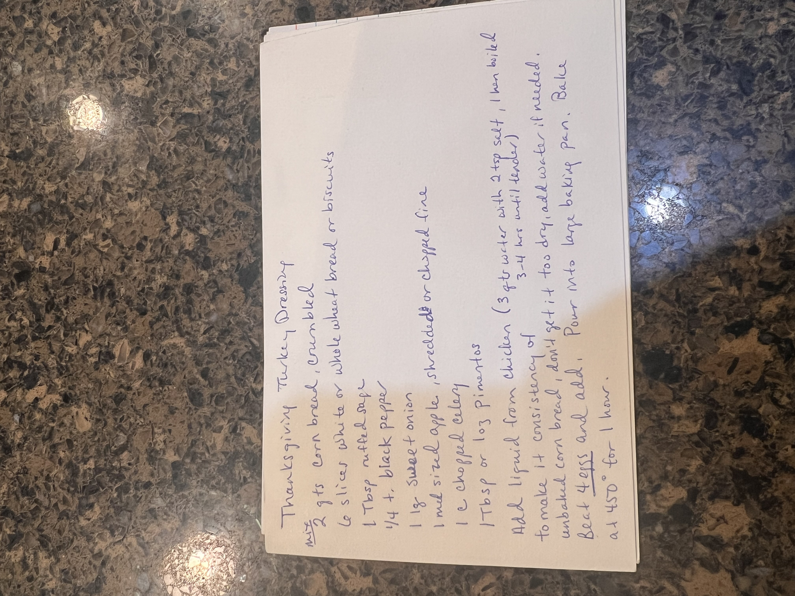
Ingredients
2 qts corn bread, crumbled
6 slices white or whole wheat bread or biscuits
1 Tbsp rubbed sage
1/4 t black pepper
1 lg sweet onion
1 med sized apple, shredded or chopped fine
1 c chopped celery
1 Tbsp or 1 oz pimentos
4 eggs
Instructions
Add liquid from chicken (3 qts water with 2 tsp salt, 1 hen boiled 3-4 hrs until tender) to make it consistency of unbaked corn bread, don't get it too dry, add water if needed. Beat 4 eggs and add. Pour into large baking pan. Bake at 450° for 1 hour.
Candy
Caramels
Candy thermometer required | 238-240°F
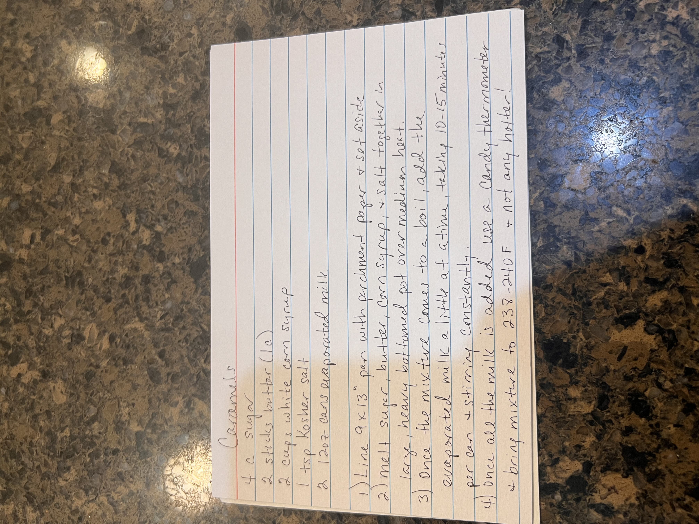
Ingredients
4 c sugar
2 sticks butter (1 lb)
2 cups white corn syrup
1 tsp kosher salt
2 12oz cans evaporated milk
Instructions
Line 9x13" pan with parchment paper & set aside.
Melt sugar, butter, corn syrup, & salt together in large, heavy bottomed pot over medium heat.
Once the mixture comes to a boil, add the evaporated milk a little at a time, taking 10-15 minutes per can & stirring constantly.
Once all the milk is added use a candy thermometer & bring mixture to 238-240°F - not any hotter!